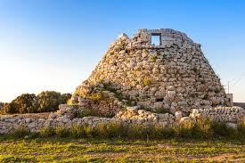
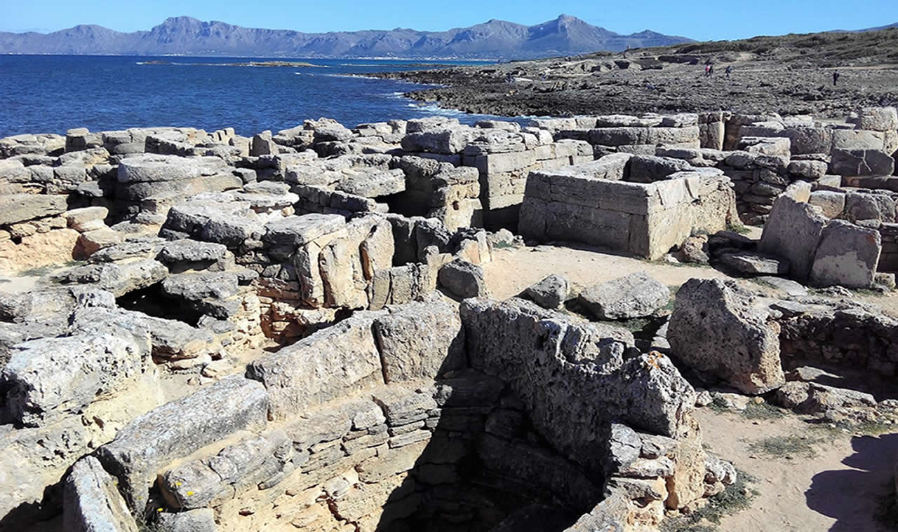
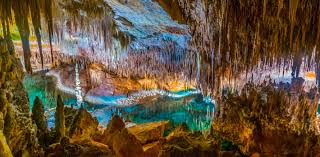

Explora los Yacimientos
Talayots
Imponentes construcciones prehistóricas distribuidas por toda la isla.
Necrópolis
Antiguos lugares de enterramiento que guardan secretos del pasado.
Cuevas
Descubre las fascinantes cuevas utilizadas por las culturas antiguas.